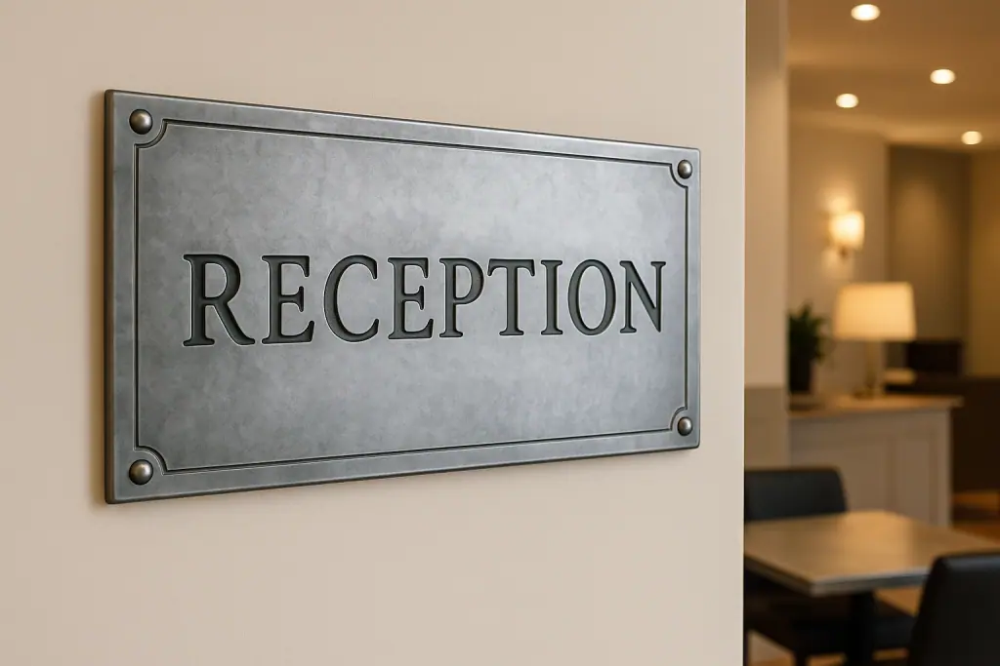

Zinc Signage
Zinc signage offers a unique way for businesses to stand out with a professional yet distinctive presence. Unlike other materials, zinc provides a sleek, modern look with the option of natural or aged finishes that create a characterful and timeless appeal. From retail branding and directional display panels to commemorative plaques and corporate office plates, handcrafted zinc signs from Halman Thompson are designed to be an effective and versatile addition to your business.

We use premium zinc metal sheets to produce durable, custom-made signs that suit a wide range of industries and applications. Our zinc plaques are ideal for both indoor and outdoor use, combining practicality with aesthetic appeal. When you buy zinc signage from Halman Thompson, you’re investing in expert craftsmanship, attention to detail, and bespoke metal signage that’s designed to reflect your brand and make a lasting impression.
Get in touch to speak to our team or request a fast, free, no-obligation quotation for your zinc signage today.

Handmade to Order
At Halman Thompson, every piece of zinc signage is made to order and carefully handcrafted in the UK by our experienced artisans. We focus on precision and expertise at every stage, ensuring that each sign is finished to the highest standard.
We can engrave or etch lettering, logos, and decorative elements, creating signage that reflects your exact branding preference. You’ll have full control over the font, style, and finish, making sure your signage perfectly aligns with your business identity. Mounting options include drilled holes, hidden fixings, or adhesive bonding, giving you flexibility on how your sign is displayed.

Designed to Last
Halman Thompson’s custom zinc signage is designed to deliver both style and performance. Resistant to weathering, corrosion, and fire, zinc is a durable and sustainable material that performs reliably in a range of indoor and outdoor environments. Our zinc signs are suitable for various applications to ensure a consistent and professional image wherever they are placed.
Our signs can be supplied with a clear protective lacquer to preserve the surface and maintain a consistent look over time. This protective layer minimises the need for polish, making zinc a low-maintenance and cost-effective alternative to other types of metal signs. Because zinc is also recyclable and energy-efficient to produce, it’s a responsible choice for businesses seeking sustainable solutions.
Request a bespoke quote .
Bespoke Zinc Signage
Your signage should be as unique as your brand. That’s why we create fully bespoke zinc signage solutions designed for each project and business. Choices include natural zinc or hand-aged finishes for a pre-weathered appearance with a ready-made patina. Every zinc plate is cut, finished, and detailed to your exact size and design requirements.
You can add text, logos, decorative borders, or branding graphics, making every sign a truly one-of-a-kind piece that reflects your brand identity and enhances your professional image. We can also create large door numbers and 3D metal letters for unique displays, wall art , or simply to add extra personalisation or another dimension to your branding.
Our flexibility and personalised service allow us to produce everything from subtle office nameplates and door plaques to bold building signs and metal display boards, ensuring your signage always suits your needs and delivers the professional presence your business deserves.
Where Zinc Signage Can Be Used
Zinc signs are versatile and practical, making them a smart choice for all kinds of businesses and applications. They can be mounted on desks, doors, tables, walls, buildings and more. From fascia signage on shopfronts, hotels, and commercial properties to office nameplates, hotel plaques, restaurant table signs, and many other interior or exterior displays, zinc signage delivers a professional and lasting presence.
Zinc plaques and signs are popular across many sectors for a variety of uses, including:
- Retail shopfronts and interior branding
- Corporate office doors and nameplates
- Hotel and restaurant signage, including table and directional signs
- Heritage plaques and commemorative displays
- Real estate boards and property signage
- Educational and public sector information boards
Our handmade zinc signs are not only functional but also stylish, making them a valuable feature wherever they are used. Whether your business wants to stand out and make a bigger impact or needs to improve your customers’ experience with professional signs, Halman Thompson can help.
Handcrafted Quality You Can Trust
We pride ourselves on delivering zinc signage of the highest quality, backed by our reputation for handcrafted excellence. Each order is produced with precision, ensuring every detail is finished to perfection.
Our processes include engraving or etch work and laser cutting to precise measurements, along with specialist surface treatments and a range of custom design options, from fonts to finishes. Choose from a range of looks, from natural zinc to hand-aged zinc finishes such as our Lightly Aged Zinc and Antique Zinc styles.
The result is premium business signage that delivers an excellent first impression, maintains brand visibility, and lasts a long time with minimal upkeep.
Looking After Your Zinc Signage
Maintaining your zinc signage is simple. With the standard protective lacquer finish, signs resist tarnishing and retain their consistent appearance. To clean, gently wipe the surface with a soft cloth and mild soapy water as needed. With zinc’s natural strength, weather-resistance and durability, our signs stay looking polished and professional to give your business a reliable and lasting presence.
Let Halman Thompson create the perfect zinc sign for your business. Contact us today to discuss your requirements or complete our bespoke quote form for a fast, free personalised zinc signage quotation.
Choose a finish


If you can dream it, we’ll make it.
Bars, balustrades, staircases, worktops, cladding and pieces that don’t have a name yet. Our designers and craftspeople work in brass, copper, zinc and steel, and alongside wood.